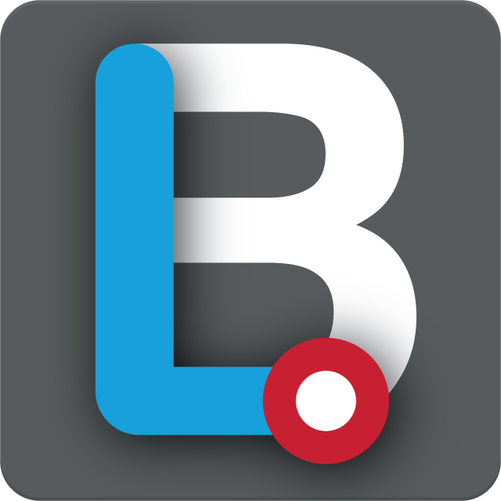
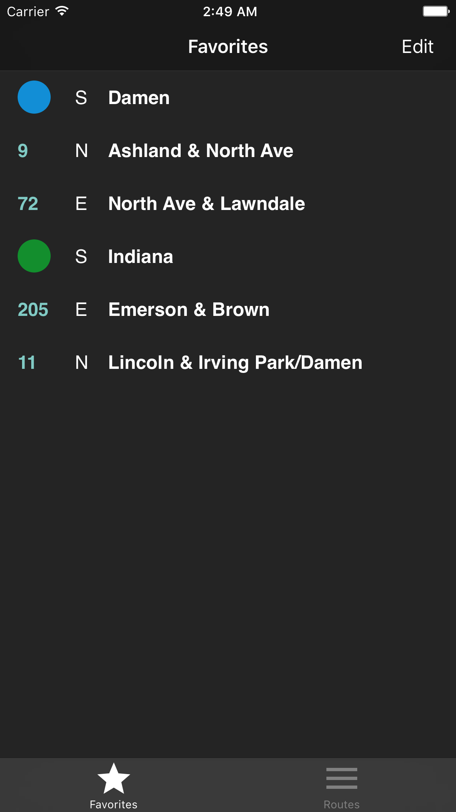
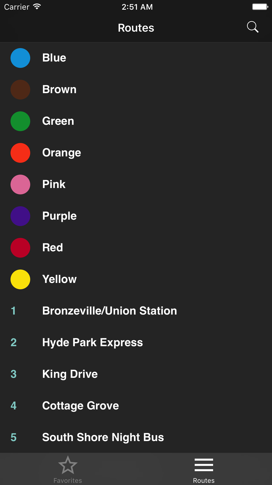
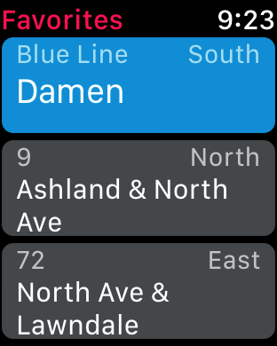
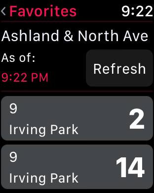

Work
This is a list of the personal projects I have completed or am currently working on. It is sorted from most recent (top) to oldest (bottom).
-
'L' Bus
'L' Bus is a Chicago Transit Authority (CTA) Bus and Train tracker iOS and watchOS app.
 'L' Bus Logo iOS
 iOS view of the favorites section It features the ability to favorite stops for future easy access.
 iOS view of the routes section Users are able to select a route and stop in order to view approximate vehicle arrival times at the selected stop.
Vehicles can be followed to keep track of where they are and approximate arrival times at other stops.
In addition, 'L' Bus is able to read aloud the upcoming arrival times, refreshing every 45 seconds to provide updated times.
watchOS
The watchOS app is able to display the stops the user favorited in the iOS app.
 watchOS view of favorites The user is able to view estimated arrival times as well as refresh for latests times.
 watchOS view of arrival times